On the morning of December 7, 1941, a young sailor aboard the USS Arizona sat down for breakfast in Pearl Harbor, Hawaii. At 7:55 a.m., Japanese bombs began to fall. Within two hours, the Arizona was sinking, and more than 1,100 of its sailors were dead. That single Sunday morning changed everything: a country that had spent years trying to stay out of war suddenly had no choice.
On December 7, 1941, a sailor on the USS Arizona was eating breakfast in Pearl Harbor, Hawaii. At 7:55 a.m., Japanese planes attacked. In two hours, the Arizona was sinking. More than 1,100 sailors on that ship died. That morning changed everything. The United States had tried to stay out of the war, but now it was going in.
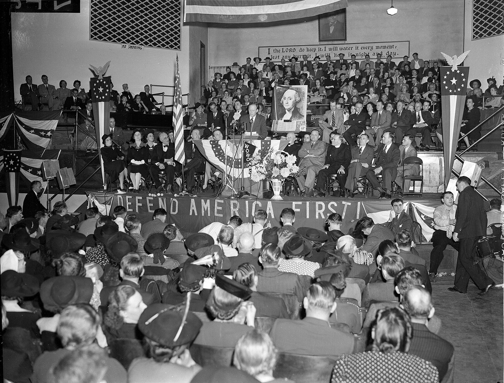
By the late 1930s, two massive wars were already underway. In Europe, Adolf Hitler had led Nazi Germany to conquer nation after nation. In Asia, Japan had invaded China and was pushing to control the Pacific region. Millions of people were already dying, but most Americans watched from a distance and wanted to keep it that way.
By the late 1930s, big wars had already started. Nazi Germany was taking over countries in Europe. Japan had invaded China and wanted more land in Asia and the Pacific. Millions of people were dying. Many Americans saw the danger but still wanted to stay out.
This attitude had a name: isolationismThe belief that a country should stay out of other nations' problems and focus on its own affairs.. Americans had seen soldiers die in World War I just two decades earlier. They did not want to send another generation to fight overseas. Polls showed that most Americans opposed entering the war.
This belief was called isolationism. It meant the United States should stay out of other countries' wars. Many Americans remembered World War I. They did not want more American soldiers to die far from home.
A powerful group called the America First Committee pushed hard to keep the United States neutral. Famous people like pilot Charles Lindbergh spoke at huge rallies. They argued that the ocean could protect America from fighting overseas. Congress also passed Neutrality Acts to keep the country from selling weapons to nations at war.
The America First Committee wanted the United States to stay neutral. Pilot Charles Lindbergh spoke at large rallies for this group. Congress passed laws to keep the United States from selling weapons to countries at war. Many people believed the ocean would keep America safe.
President Franklin D. Roosevelt disagreed. He believed that if Britain fell to Hitler, the United States could eventually face Germany alone. In 1941, Roosevelt supported the Lend-Lease Act, which allowed the U.S. to send weapons and supplies to Britain. America was not officially fighting yet, but it was no longer truly neutral.
President Franklin D. Roosevelt saw the war differently. He thought Britain needed help. If Britain lost, the United States might have to face Germany alone. In 1941, the U.S. began sending supplies and weapons to Britain. America was not fighting yet, but it was already helping one side.
At the same time, Japan signed a military alliance with Germany and Italy called the Axis powers. Japan wanted an empire across Asia and the Pacific, and American military bases stood in the way. As 1941 wore on, tension between Japan and the United States grew sharper. Japan wanted one bold move to remove the American threat.
Japan also became more dangerous to the United States. Japan joined Germany and Italy as part of the Axis powers. Japan wanted to control more land in Asia and the Pacific. American bases were in Japan's way. By late 1941, Japan was planning a major attack.
"We must be the great arsenal of democracy. For us this is an emergency as serious as war itself."Franklin D. Roosevelt, Fireside Chat radio address, December 29, 1940.
Roosevelt is telling Americans that they are not at war yet, but they must build weapons and supplies for countries fighting dictatorships.
FDR delivered many of his radio speeches from the White House while sitting near a microphone like he was talking to one family in one living room.
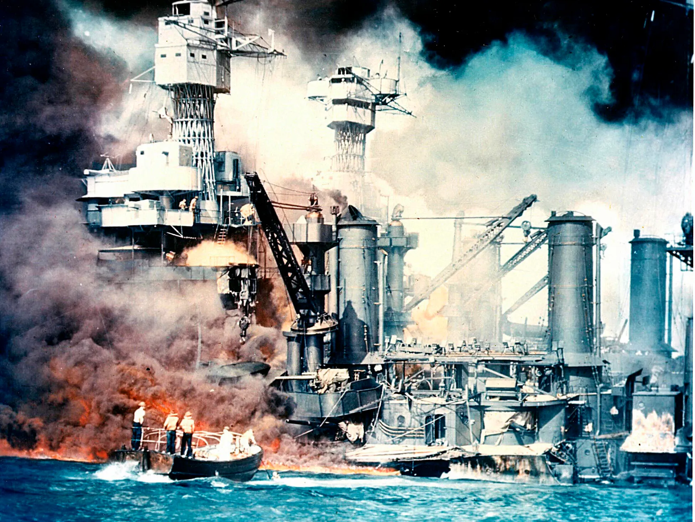
Japan's attack on Pearl HarborThe U.S. Navy base in Hawaii that Japan attacked without warning on December 7, 1941, pulling the United States into World War II. was a military surprise. Japanese commanders chose Pearl Harbor because they wanted to cripple the American Pacific Fleet before the U.S. could stop Japan's expansion. They sent 353 aircraft in two waves from six aircraft carriers north of Hawaii.
Japan attacked Pearl Harbor without warning. Pearl Harbor was a major U.S. Navy base in Hawaii. Japan wanted to damage the American Pacific Fleet. Japanese leaders hoped this would give them time to take more land in Asia and the Pacific.
The attack lasted about two hours. When it ended, eight American battleships had been hit, and four were sunk. The USS Arizona exploded and sank in less than nine minutes, killing 1,177 sailors. In total, 2,403 Americans died that morning, and 1,178 were wounded.
The attack lasted about two hours. Eight American battleships were hit. Four sank. The USS Arizona exploded and sank in less than nine minutes. That ship alone lost 1,177 sailors. In all, 2,403 Americans died that morning.
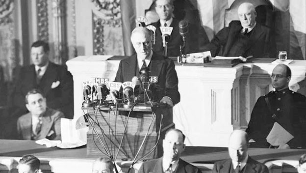
The next day, Roosevelt went before Congress. His speech lasted less than seven minutes. He called December 7 "a date which will live in infamy." Congress declared war on Japan with only one dissenting vote. Three days later, Germany and Italy declared war on the United States. America was now fully at war on two fronts: the Pacific and Europe.
The next day, Roosevelt spoke to Congress. His speech was short. He called December 7 "a date which will live in infamy." Congress voted to declare war on Japan. Three days later, Germany and Italy declared war on the United States. America was now in World War II.
The attack did not destroy everything Japan hoped it would. American aircraft carriers were not at Pearl Harbor that day. They were at sea, and those carriers later became essential in the Pacific War. But the political effect was immediate. Isolationism collapsed overnight, and a divided nation united behind the war effort.
Japan did not destroy everything it wanted to destroy. American aircraft carriers were not at Pearl Harbor that day. They were at sea. Those carriers would matter later. But Pearl Harbor changed American opinion right away. Most people now supported going to war.
"Yesterday, December 7th, 1941, a date which will live in infamy, the United States of America was suddenly and deliberately attacked by naval and air forces of the Empire of Japan."Franklin D. Roosevelt, Address to Congress, December 8, 1941.
Roosevelt is saying the attack was planned, not accidental, and he is asking Congress to officially declare war.
Question 1: What is Roosevelt saying about how the attack happened?
Question 2: How does this speech help answer the Essential Question?
After Pearl Harbor, the United States had to turn a peacetime country into a war machine at a speed it had never reached before. Car factories began making tanks and jeeps. Washing machine factories made airplane parts. By 1944, the United States was producing more weapons and equipment than Germany, Japan, and Italy combined.
After Pearl Harbor, the United States had to change fast. The country had to build a huge military. Car factories made tanks and jeeps. Other factories made airplane parts. By 1944, the United States was making more war supplies than Germany, Japan, and Italy together.
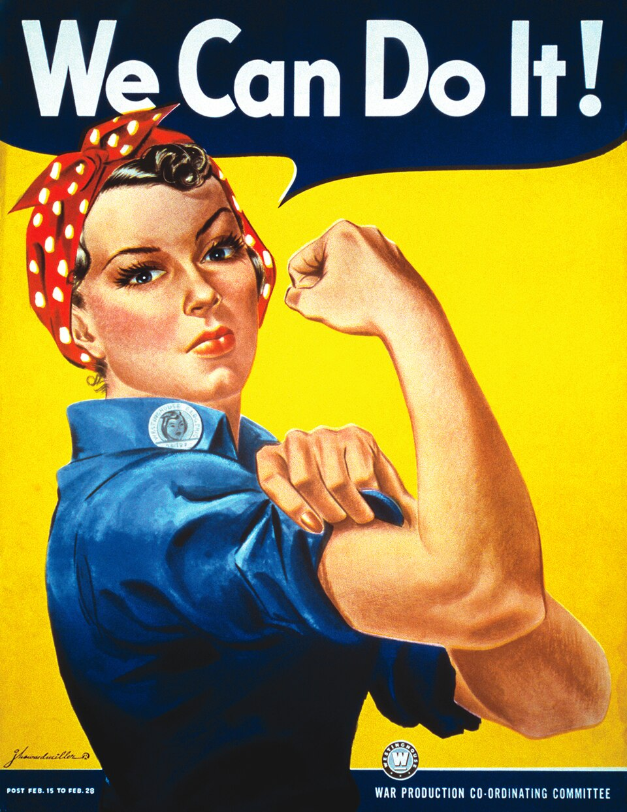
Millions of American men entered military service. To fill the jobs they left behind, women entered the workforce by the millions. The government promoted Rosie the Riveter, a woman in a factory uniform with her sleeves rolled up. Six million women took jobs in war factories, and many had never worked outside the home before.
Millions of men joined the military. Women filled many of the jobs they left. The government used Rosie the Riveter as a symbol of women working in factories. Six million women took war jobs. Many had never worked outside the home before.
The war also changed everyday life. The government rationed food, gasoline, rubber, and metal so soldiers had enough supplies. Families used ration books that limited how much sugar, butter, and meat they could buy. People grew victory gardens in yards and empty lots. Sacrifice became part of daily life.
The war changed daily life at home. The government limited how much food, gas, rubber, and metal people could use. Families used ration books. These books controlled how much sugar, butter, and meat they could buy. Many people planted victory gardens to grow extra food.
One of the darkest chapters of the war at home was the treatment of Japanese Americans. After Pearl Harbor, fear and racism led the government to remove 120,000 people of Japanese descent from their homes on the West Coast. Most were American citizens, and they had committed no crime. Families had only days to sell what they owned and report to camps.
The war also brought serious injustice. After Pearl Harbor, the government forced 120,000 Japanese Americans from their homes on the West Coast. Most were U.S. citizens. They had done nothing wrong. Many families had only a few days to sell their belongings and leave.
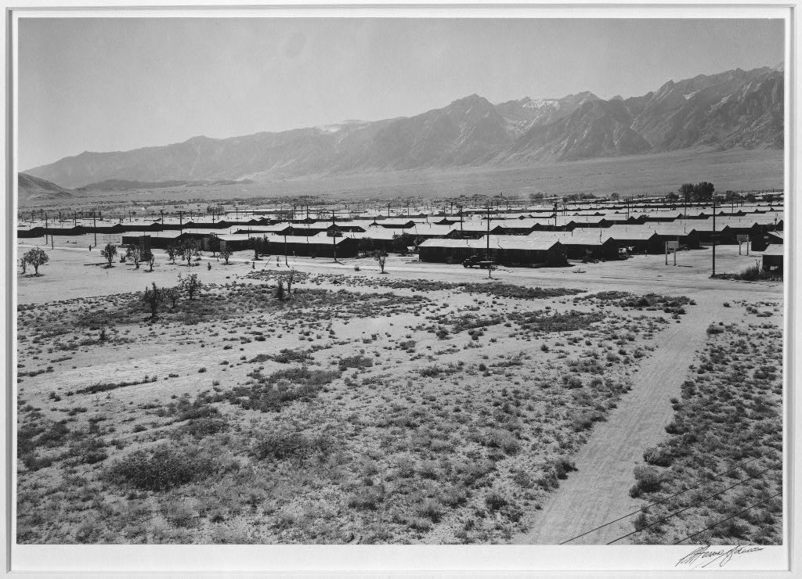
Despite this injustice, many Japanese Americans chose to serve in the U.S. military. The 442nd Regimental Combat Team, made up mostly of Japanese American soldiers, became one of the most decorated units in American military history. They fought for a country that had imprisoned their families. Today, this incarceration is remembered as a warning about what fear and prejudice can do to a democracy.
Even after this injustice, many Japanese Americans served in the U.S. military. The 442nd Regimental Combat Team was made mostly of Japanese American soldiers. It became one of the most honored units in American military history. These soldiers fought for a country that had locked up their families.
Your family gets one suitcase and three days to leave home. What is the first thing you pack, and what would be impossible to leave behind?
By mid-1942, the Allied powersThe countries that fought together against Germany, Japan, and Italy in World War II; mainly the United States, Great Britain, the Soviet Union, and France. were fighting on two sides of the world at once. They needed a strategy to win in Europe and the Pacific. They called it "Europe First," which meant defeating Germany before turning full attention to Japan. But the Pacific War demanded action immediately.
By mid-1942, the Allied powers were fighting in Europe and the Pacific at the same time. The main Allies were the United States, Great Britain, the Soviet Union, and France. They planned to defeat Germany first. But the war against Japan also needed attention right away.
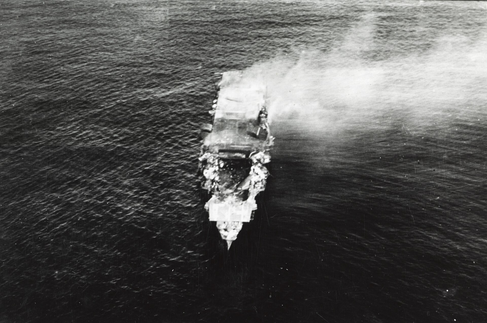
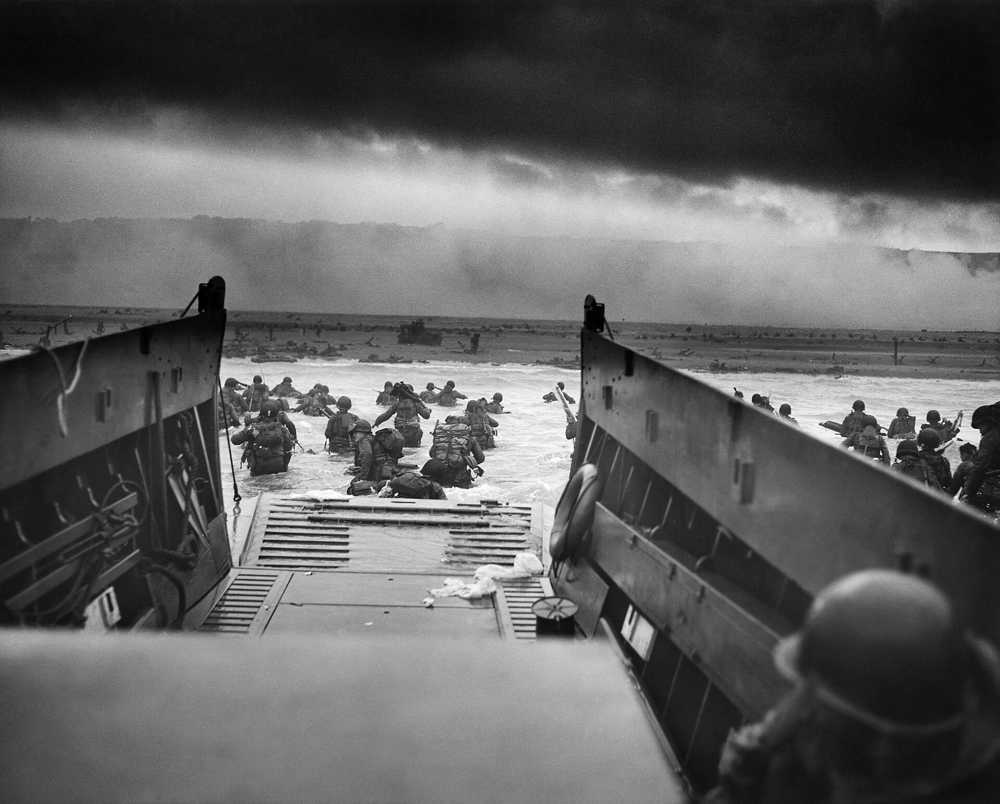
The first major turning point in the Pacific came at the Battle of Midway in June 1942. American code breakers had cracked the Japanese naval code and knew Japan planned to attack Midway Island. U.S. commanders set a trap. In a three-day battle fought in the air and at sea, the United States sank four Japanese aircraft carriers. Japan never fully recovered.
The Battle of Midway was a major turning point in the Pacific. American code breakers learned Japan planned to attack Midway Island. U.S. commanders set a trap. In three days, the United States sank four Japanese aircraft carriers. Japan never fully recovered from this loss.
The American strategy in the Pacific was called island-hoppingA military strategy in which Allied forces captured key islands while bypassing others, moving closer to Japan step by step.. Instead of taking every Japanese-held island, American forces captured key islands and used them as bases to move closer to Japan. Battles at Guadalcanal, Iwo Jima, and Okinawa were brutal. At Iwo Jima, marines fought for 36 days to take a volcanic island barely five miles long.
In the Pacific, the United States used island-hopping. This meant taking some important islands and skipping others. Each island became a base for the next attack. Battles like Iwo Jima and Okinawa were very deadly. At Iwo Jima, marines fought for 36 days on a small volcanic island.
In Europe, the tide turned with the Allied invasion of Normandy, France on June 6, 1944, called D-DayThe Allied invasion of the beaches of Normandy, France on June 6, 1944; the largest seaborne military invasion in history.. General Dwight D. Eisenhower commanded 156,000 American, British, and Canadian troops who landed on five beaches in one day. The Allies held the beaches and began pushing toward Germany.
In Europe, D-Day changed the war. On June 6, 1944, Allied troops landed on the beaches of Normandy, France. General Dwight D. Eisenhower led the invasion. More than 156,000 troops landed in one day. The Allies held the beaches and started moving toward Germany.
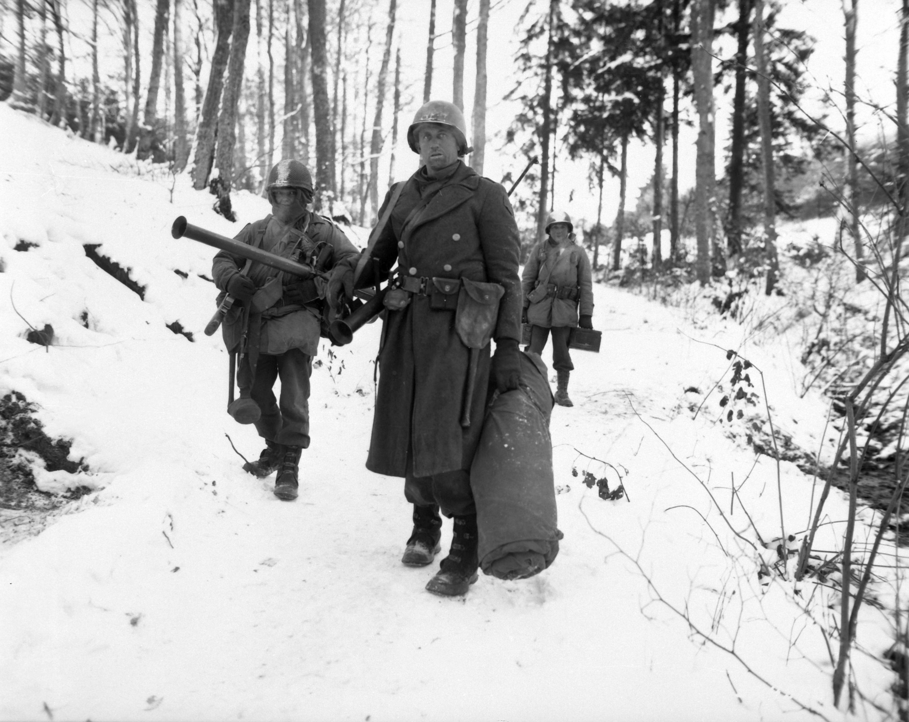
Germany fought back hard. In December 1944, Hitler launched a last desperate attack through the Ardennes Forest in Belgium. German forces pushed into Allied lines and surrounded the American town of Bastogne. When the German commander demanded surrender, General Anthony McAuliffe sent a one-word reply: "Nuts." Allied forces held on and pushed Germany back.
Germany still fought hard. In December 1944, Hitler launched one last big attack in Belgium. German soldiers surrounded the town of Bastogne. When they asked the Americans to surrender, General Anthony McAuliffe replied, "Nuts." The Allies held the town and pushed Germany back.
Germany surrendered on May 8, 1945, called V-E Day. The war in the Pacific continued. U.S. leaders believed invading Japan could cost many American lives. President Harry Truman decided to use the new atomic bomb. The United States destroyed Hiroshima on August 6, 1945, and Nagasaki three days later. Japan surrendered on August 15, 1945. World War II was over.
Germany surrendered on May 8, 1945. That was called V-E Day. But Japan kept fighting. President Harry Truman chose to use the new atomic bomb. The United States bombed Hiroshima on August 6, 1945, and Nagasaki three days later. Japan surrendered on August 15, 1945.
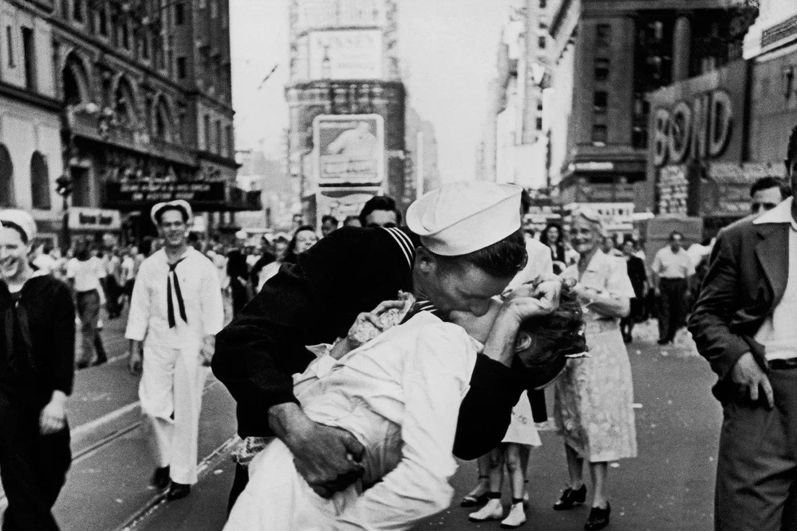
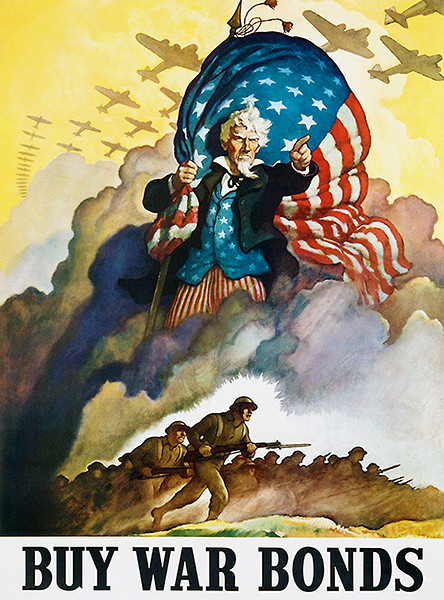
What do you think this poster is trying to make someone feel in the first three seconds?
The alliances and institutions created after World War II still shape who the United States protects, who it challenges, and how the world responds when war breaks out.
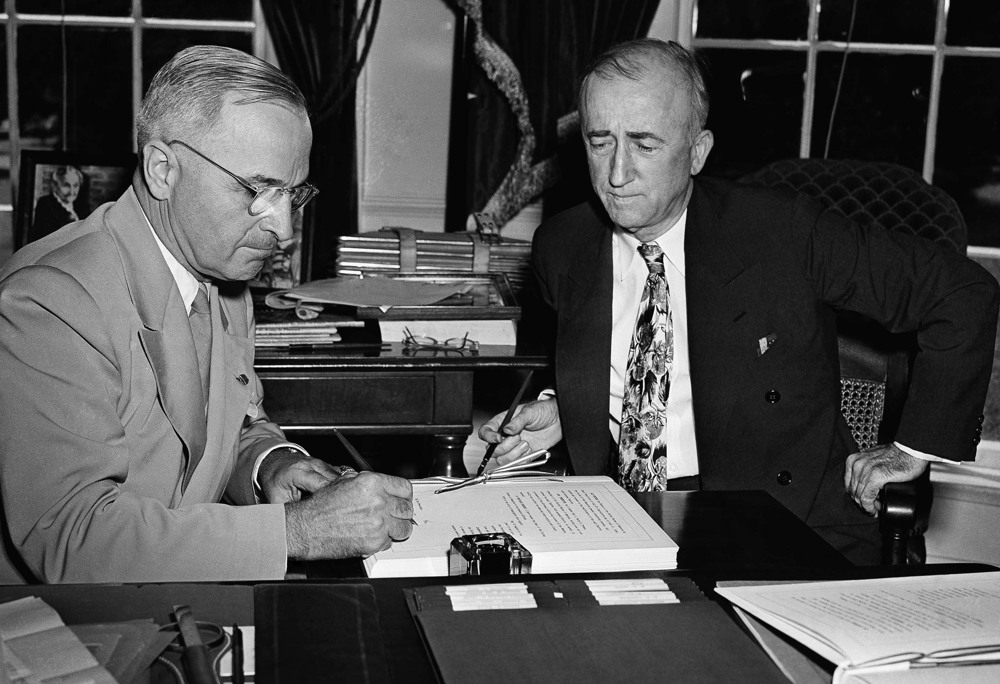
Delegates sign the United Nations Charter in San Francisco, June 26, 1945.
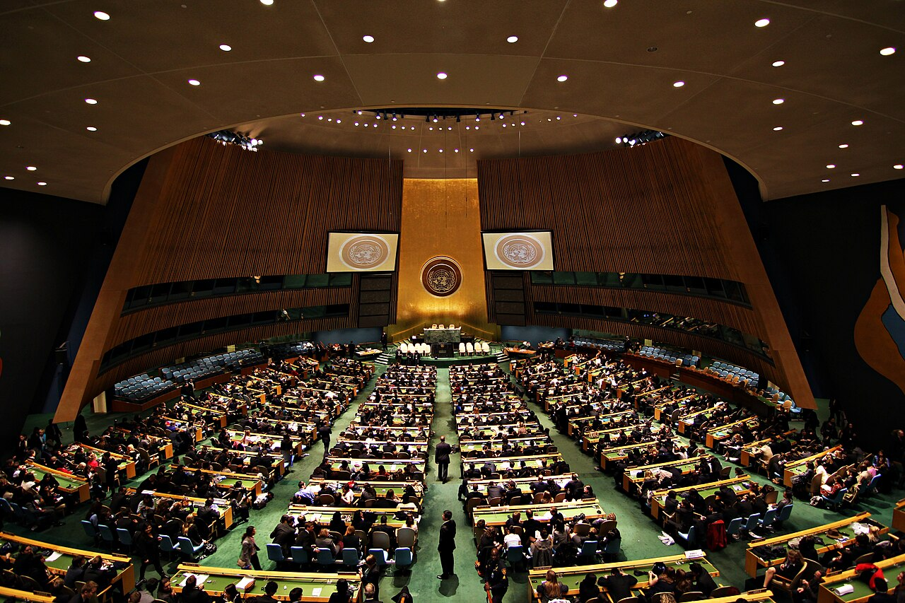
Delegates meet in the United Nations General Assembly in the modern era.
If someone from the 1945 room walked into the modern room, what would they notice first?
When a country is attacked, how far should its response go before defense becomes something much bigger?
San Diego became one of the most important military cities in the Pacific War.
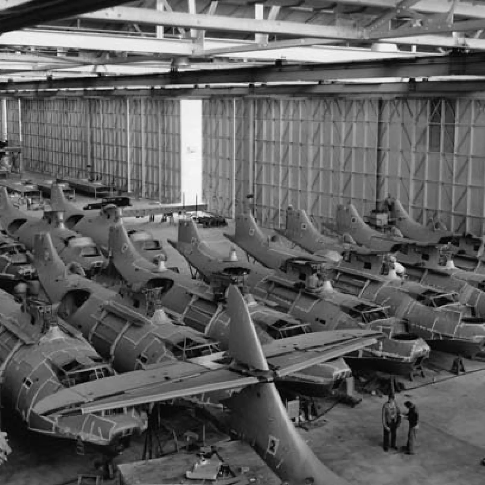
After Pearl Harbor, San Diego's Navy and Marine bases became central to the war in the Pacific. Consolidated Aircraft near Lindbergh Field employed over 40,000 workers and built the B-24 Liberator bomber.
After Pearl Harbor, San Diego became very important to the Pacific War. Navy and Marine bases grew quickly. Consolidated Aircraft near Lindbergh Field had more than 40,000 workers and built B-24 bombers.
Japanese American families in San Diego's Logan Heights neighborhood were also among those forced into incarceration camps in 1942. The war brought jobs, military power, and injustice to the same region at the same time.
Japanese American families in Logan Heights were also forced into camps in 1942. San Diego's war story includes jobs and military power. It also includes injustice.